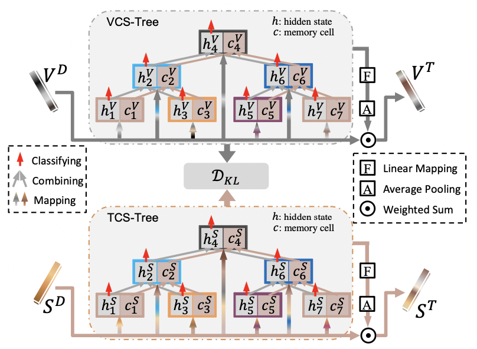

Xuri Ge (葛旭日)
Best way to reach me →
Email: xurigexmu@gmail.com
I am currently a 1st-year Ph.D student at School of Computing Science, University of Glasgow, Scotland, UK and a member of the Information Retrieval group .
My supervisor is Prof. Joemon M Jose.
I received my master degree from Xiamen University in 2020. My advisors are Prof. Rongrong Ji and Minghui Shi. During my master, I worked in the Laboratory of MAC, Artificial Intelligence Department, School of Informatics, Xiamen University, China.
More recently, I focus on:
- Recommended System (Future)
- Multimedia and Machine Learning
- Computer Vision
Publications

- 


Pre-print:
Xuri Ge✉,Xiaoshuai Sun, Zhilong Ji, Pengcheng Wang, Xiao Liu, Zhongqin Wu
The DenseCap-Guided Attention Network For Image-Text Matching. [pdf coming]
Under review.
The DenseCap-Guided Attention Network For Image-Text Matching. [pdf coming]
Under review.
Fuhai Chen, Xiaoshuai Sun✉, Xuri Ge, Jianzhuang Liu, Yongjian Wu, Feiyue Huang, Rongrong Ji
Differentiated Relevances Embedding for Group-based Referring Expression Comprehension. [pdf coming]
Under review.
Differentiated Relevances Embedding for Group-based Referring Expression Comprehension. [pdf coming]
Under review.
Published:
Xuri Ge, Fuhai Chen, Joemon M. Jose, Zhilong Ji, Zhongqin Wu, Xiao Liu.
Structured Multi-modal Feature Embedding and Alignment for Image-Sentence Retrieval. [pdf]
ACM International Conference on Multimedia (ACM MM), 2021. (Accepted).
Structured Multi-modal Feature Embedding and Alignment for Image-Sentence Retrieval. [pdf]
ACM International Conference on Multimedia (ACM MM), 2021. (Accepted).
Xuri Ge, Pengcheng Wang, Hu Han, Joemon M. Jose, Zhonglong Ji, Zhongqin Wu, Xiao Liu.
Local Global Relational Network for Facial Action Units Recognition. [pdf coming]
IEEE International Conference on Automatic Face and Gesture Recognition, 2021. (Accepted).
Local Global Relational Network for Facial Action Units Recognition. [pdf coming]
IEEE International Conference on Automatic Face and Gesture Recognition, 2021. (Accepted).
Pre-patent:
Xuri Ge✉, Zhilong Ji, Xiao Liu
检索方法、电子设备及计算机可读介质.
Published: CN 112287159 A; Num: 202011506349.4
检索方法、电子设备及计算机可读介质.
Published: CN 112287159 A; Num: 202011506349.4
Xuri Ge✉, Zhilong Ji, Xiao Liu
弹幕生成方法、装置、电子设备及计算机存储介质.
Published: CN 112016573 A; Num: 202011112941.6
弹幕生成方法、装置、电子设备及计算机存储介质.
Published: CN 112016573 A; Num: 202011112941.6
Activities
- Conference Reviewer: ACMMM2021, FG2021
- Organizing committee of AutoGen-CDR19 challenge in MICCAI 2019 (Link).
- 1st Prize (team name: MAC-Group), award on Workshop of Automatic Generation of Cardiovascular Diagnostic Report, The 22th Medical Image Computing Computer Assisted Intervention (MICCAI 2019), 2019.
- 5th Prize (team name: SenseTime, method name: GraphLayout), award on ICDAR 2019 Robust Reading Challenge.
Working Experiences
- 2020.07 - 2021.04, Computer Vision Researcher, TAL.
- 2019.03 - 2019.07, Research Intern, SenseTime.
- Spring 2018, Teaching assistant of “Introduction to Artificial Intelligence”, Xiamen University.
- Summer 2021, Teaching assistant of “Text as Data (M)”, University of Glasgow.
- Summer 2021, Teaching assistant of “Web Science (M)”, University of Glasgow.
Awards
- China Scholarship Council (CSC) Scholarships, 2021.01-2025.01
- Xiamen University Scholarship, 2017-2020